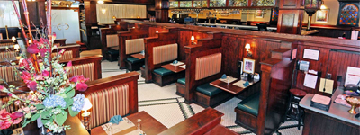

|  |
|
Scott's French Bistro is a full-service restaurant/cafe located in the revitalized downtown area of New Albany, Indiana. The restaurant features a full menu of moderately priced "comfort" food influenced by African and French cooking traditions, but based upon time honored recipes from around the world. The cafe section of the bistro features a coffeehouse with a dessert bar, magazines, and space for live performers. |